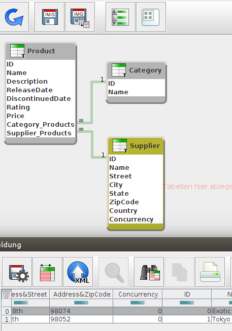

OData ist ein standardisiertes Protokoll für das Publizieren und Konsumieren von Daten-APIs. In meinen ersten beiden Artikeln habe ich mich mit der Analyse von Metadaten beschäftigt. Nun war es an der Zeit, einen einfachen Content Browser für OData Services zu stricken.
 Es existieren verschiedene Libraries für den Zugriff auf
OData-Services von Java aus.
Ein Beispiel dafür ist
odata4j. Den Content-Browser wollte ich mit
den bereits in der
sQLshell
erprobten Komponenten realisieren. Dort existiert zum Beispiel
eine Komponente namens TableView, die die Ergebnisse einer SQL-Abfrage darstellen kann.
Es existieren verschiedene Libraries für den Zugriff auf
OData-Services von Java aus.
Ein Beispiel dafür ist
odata4j. Den Content-Browser wollte ich mit
den bereits in der
sQLshell
erprobten Komponenten realisieren. Dort existiert zum Beispiel
eine Komponente namens TableView, die die Ergebnisse einer SQL-Abfrage darstellen kann.
Die Schnittstelle, die bedient werden muß, ist ein java.sql.ResultSet. Damit war die Aufgabe klar umrissen: Schaffe einen Wrapper, der ein OData-EntitySet wie ein SQL-ResultSet aussehen lässt. Das war glücklicherweise schneller getan als gedacht, da ich hier auf den Code verschiedener JDBC-Treiber zurückgreifen konnte, die ich während der Entwicklung der sQLshell geschrieben habe, bzw schreiben musste (Danke, Informix).
Damit war ein erster Wrapper schnell erstellt. Damit war es dann möglich, für EntitySets TableViews zu öffnen. Anschließend wurde der Wrapper noch ein wenig erweitert, um auch mit CompexTypes im OData-Schema umgehen zu können.
Mit den besonders für den vorhergehenden Artikel und den hier gewonnenen Informationen wäre es möglich, einen JDBC-Treiber zu erstellen, der den Zugriff auf OData-Services fast transparent erlauben würde. Das werde ich mir aber aufheben, da kein unmittelbarer Bedarf besteht und gerade Sommer wird - da ist mir der Garten dann doch lieber...

Hier ein Screenshot des Schema-Browsers. Der Content-Browser zeigt das EntitySet Suppliers an. Man sieht, wie ComplexTypes behandelt werden: die Properties der Complextypes werden als Properties mit einem Namensprefix in das Entity integriert.Artikel, die hierher verlinken
sQLshell und Echtzeitdatenbanken
12.11.2019
Die sQLshell wurde eigentlich für die Arbeit mit relationalen Datenbanken geschaffe. Trotzdem hat sie bereits diverse Ausflüge in andere Bereiche unternommen. Jetzt kam ein weiterer dazu...
sQLshell integriert LDAP-JDBC-Bridge
08.01.2018
Die sQLshell hat auch in der Vergangenheit schon Brücken geschlagen - jetzt kommt eine weitere hinzu.
Tags


Neueste Artikel
-
 Timestamping Server Projekt
Timestamping Server Projekt
Nach meinen Anstrengungen, die Expect Dialog CA für den Einsatz als Unterstützung beim Anbieten von Timestamping-Diensten fit zu machen, habe ich nach Lösungen gesucht, die es mir erlauben, die dadurch entstehenden Konfigurationen und sonstigen Materialien (Schlüssel, Zertifikate,...) einem Praxistest zu unterziehen
Weiterlesen... -
8TB Raid5 mit Raspberry Pi
Ich habe mir neulich überlegt, ob man einen Pi als Raid benutzen könnte - aber nicht mit dem ewig gleichen Setup mit 4 USB-Sticks...
Weiterlesen... -
Expect-Dialog-CA Version 2.0.0
CA-Management-Lösung in Version 2.0.0 fertiggestellt und auf Github verfügbar
Weiterlesen...
Manche nennen es Blog, manche Web-Seite - ich schreibe hier hin und wieder über meine Erlebnisse, Rückschläge und Erleuchtungen bei meinen Hobbies.
Wer daran teilhaben und eventuell sogar davon profitieren möchte, muß damit leben, daß ich hin und wieder kleine Ausflüge in Bereiche mache, die nichts mit IT, Administration oder Softwareentwicklung zu tun haben.
Ich wünsche allen Lesern viel Spaß und hin und wieder einen kleinen AHA!-Effekt...
PS: Meine öffentlichen GitHub-Repositories findet man hier.